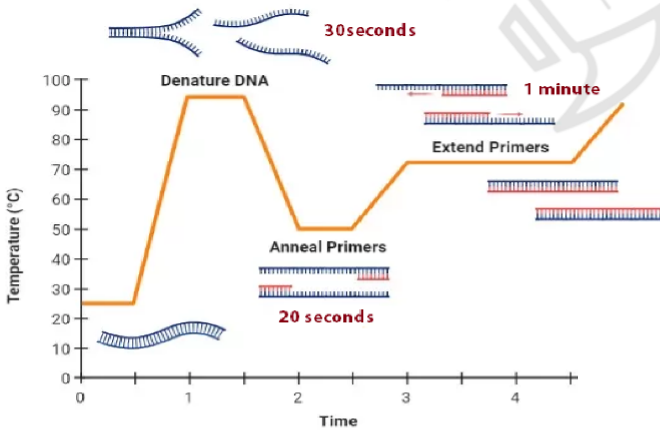
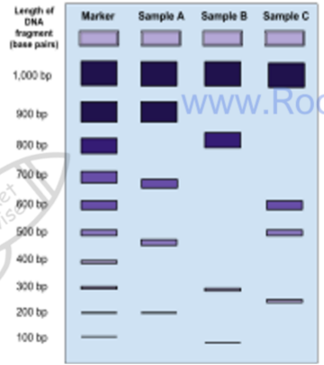
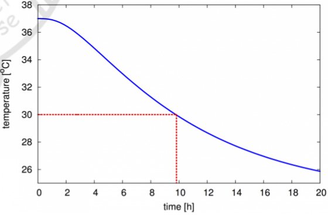

Decomposition and forensics
Forensic biology uses DNA to link people to evidence, and uses the predictable changes in a dead body to estimate how long ago death occurred. This page explains how the polymerase chain reaction copies DNA, how fragments are separated and profiled, and how body temperature, rigor mortis, decomposition and insects are combined to estimate the time of death.
1. Copying DNA with the polymerase chain reaction
Samples from a crime scene, such as a drop of blood or a few cells on a swab, often contain too little DNA to analyse. The polymerase chain reaction (PCR) makes millions of copies of chosen regions of DNA in a few hours. The DNA is mixed in a tube with plenty of all four DNA nucleotides, a pair of primers, a heat-stable DNA polymerase and a buffer, and placed in a thermal cycler that changes the temperature automatically. Each cycle has three steps.
Denaturation: the mixture is heated to about 95 °C.
This breaks the hydrogen bonds between complementary bases, so the double helix separates into two single strands that can act as templates.
Annealing: the mixture is cooled to about 50 to 60 °C, so the primers bind (anneal) by complementary base pairing to the start of the target region on each strand.
A primer is a short single strand of DNA, about 20 bases long. DNA polymerase can only add nucleotides to an existing strand, so it needs a primer to start.
Extension: the temperature is raised to about 72 °C, the optimum of the polymerase. The enzyme adds free nucleotides to the end of each primer, making a new strand complementary to each template.
Each original molecule has now become two, so the number of copies doubles with every cycle. About 30 cycles are usually run.

The polymerase comes from a bacterium that lives in hot springs, such as Thermus aquaticus (Taq polymerase). Because it is heat stable, it is not denatured in the 95 °C step, so it does not need to be replaced every cycle. Its high optimum temperature also means extension can happen at a temperature above the annealing temperature, which makes each cycle efficient. Human DNA polymerase works best at about 37 °C and would be denatured, because its active site would change shape, at PCR temperatures.
Each cycle doubles the number of DNA molecules, so after n cycles one molecule has become 2ⁿ molecules.
To make 128 molecules from one, set 2ⁿ = 128.
128 = 2 × 2 × 2 × 2 × 2 × 2 × 2 = 2⁷, so 7 cycles are needed.
Check: after 6 cycles there would be only 64 molecules.
2. Separating DNA fragments by gel electrophoresis
Gel electrophoresis separates DNA fragments according to their length. Restriction enzymes cut the DNA at specific base sequences, producing fragments of different lengths. The fragments are loaded into wells at one end of a slab of agarose gel covered with a buffer solution, and an electric current is passed through it. Phosphate groups make DNA negatively charged, so the fragments move towards the positive electrode. The gel acts as a sieve: shorter fragments move through its pores more easily and travel further in a given time, so after the run the fragments are spread out by size, with the shortest furthest from the wells.
Electrophoresis separates DNA fragments by size, not by charge. Every nucleotide carries the same negative charge, so the charge for each unit of length is the same for all fragments; it is the sieving effect of the gel that makes shorter fragments move faster.
The DNA bands cannot be seen directly. In the traditional method, the DNA is made single-stranded and transferred from the gel onto a nylon or nitrocellulose membrane placed on top of it (a Southern blot). The membrane is then treated with DNA probes: short, single-stranded pieces of DNA with a base sequence complementary to the regions of interest, labelled with a radioactive isotope or a fluorescent marker. The probes bind only where there is a complementary sequence. With radioactive probes, an X-ray film placed on the membrane darkens where the probes are; fluorescent probes glow under ultraviolet light.
A DNA ladder, or marker, is run in one lane alongside the samples. It contains fragments of known lengths, so the length of each sample band can be estimated by comparing how far it has travelled.

3. DNA profiling
Most human DNA does not code for proteins. Some of these non-coding regions contain short base sequences repeated one after another, called variable number tandem repeats (VNTRs). The number of repeats at each VNTR locus varies greatly between people. Each person inherits two copies of each locus, one from each parent, so each locus gives one or two bands. Because many loci are analysed, the chance of two unrelated people having the same pattern is extremely small; only identical twins share all their VNTR lengths. Repeats come in two sizes: microsatellites, or short tandem repeats, have units of 2 to 6 bases, and minisatellites have longer units of about 10 to 100 bases.
Collect samples from the crime scene and from suspects, such as blood, saliva or hair roots, and extract and purify the DNA.
Amplify the DNA by PCR so there is enough to analyse.
Cut the DNA with restriction enzymes to produce fragments that contain the VNTRs.
Separate the fragments by gel electrophoresis, make them visible with labelled probes, and compare the band patterns of the samples.
If a suspect's bands match those from the crime scene at every locus, the samples very probably came from the same person; if any band does not match, the suspect is excluded. In a paternity test, every band in a child's profile must have come from either the mother or the father. Bands in the child that are not in the mother's profile must be present in the real father's profile, so a man who lacks them cannot be the father.
The more closely related two individuals are, the more bands their profiles share, so profiling can also show genetic relationships between organisms, both plants and animals. For identifying species, scientists compare the base sequence of a short standard region of DNA, a DNA barcode. In animals a region of a mitochondrial gene is usually used; in plants this region changes too slowly to tell species apart, so regions of chloroplast DNA are used instead.
- Primer: a short single strand of DNA complementary to the start of the region to be copied.
- Restriction enzyme: an enzyme that cuts DNA at a specific base sequence.
- VNTR: a non-coding region in which a short sequence is repeated a variable number of times.
- Probe: a labelled single strand of DNA that binds to a complementary sequence.
Describe a profile comparison in terms of bands in the same positions on the gel. Do not say that the people have the same genes: profiling compares the lengths of non-coding repeats at a few loci.
4. Estimating the time of death
After death, a mammal's body changes in an orderly sequence, and each change happens at a fairly predictable rate. Forensic scientists use body temperature, the degree of muscle contraction (rigor mortis), the extent of decomposition, the stage of insect development and the stage of succession of organisms on the body. All of these depend on temperature, because temperature controls the rate of enzyme-controlled reactions, so the ambient temperature must always be recorded. The estimates are combined with witness and other evidence to give the most likely time of death.
Body temperature
In life, the body is kept at about 37 °C by heat released in metabolic reactions such as respiration. After death these reactions slow and stop, and the body loses heat to its surroundings by radiation, conduction and evaporation of water. This cooling is called algor mortis. The core temperature, measured in the rectum or with a probe in the abdomen, stays almost steady for a short time, then falls steadily, and finally levels off at the temperature of the surroundings, giving a roughly sigmoid curve.

Measure the core temperature, say 30 °C, and the ambient temperature as soon as possible, and choose a curve drawn for similar conditions.
The rate of cooling depends on the difference between body and ambient temperature, and the ambient temperature may change over time.
Find 30 °C on the temperature axis and read across to the curve.
Read down to the time axis: about 10 hours after death for the curve shown.
Several factors change the rate of cooling. Clothing and body fat insulate the body and slow cooling. A body curled up has a smaller exposed surface area than one stretched out, so it cools more slowly. A large body has a smaller surface area to volume ratio than a small one, so it also cools more slowly. A body in water cools faster than one in air, because water conducts heat away better, and moving air cools a body faster than still air. A body found indoors usually cools more slowly than one outdoors.
If a clothed body is matched to a curve for a naked body, the estimated time since death will be too short, because the clothed body cooled more slowly. A body found in moving air would give an estimate that is too long if a still-air curve were used.
The cooling curve below is drawn for the conditions you choose, so you can read off an estimate and see how each factor changes it.
Rigor mortis
Rigor mortis is the stiffening of the muscles after death. When the heart stops, cells are starved of oxygen, so aerobic respiration stops. Anaerobic respiration continues for a while, producing lactic acid, which lowers the pH and inhibits enzymes, including those that make ATP. Muscle needs ATP to break the cross-bridges between myosin heads and actin. Without ATP the myosin stays bound to actin, so the muscle cannot relax and becomes fixed in position.
Rigor usually starts 2 to 4 hours after death in the small muscles of the face and neck and spreads down the body to the larger muscles, reaching full effect after about 6 to 8 hours. Small muscles stiffen before large ones, and not all muscles are fully rigid at the same time, so the pattern of stiffness in several muscles is used. Later, the muscles relax again as their proteins are broken down during decomposition. Rigor develops sooner if there was little ATP in the muscles at death, for example after hard exercise, and faster at higher temperatures, because the chemical reactions are faster. Physical damage, immersion in water, burning, electrocution, clothing and air movement all affect its progress.
Decomposition
After death, cells begin to digest themselves, a process called autolysis. Enzymes from the gut start to break down the gut wall and nearby cells, and lysosomes in dying cells burst and release digestive enzymes. Autolysis is faster in mild warmth and slowed by cold, and by intense heat that denatures the enzymes. Soon afterwards, bacteria from the gut and the airways multiply and spread through the tissues, digesting them; this is putrefaction. Microorganisms secrete enzymes that break down proteins, carbohydrates and fats, and their respiration releases carbon dioxide and other gases, returning carbon and other elements to the environment.
The visible signs follow a pattern, although the timings vary greatly with temperature:
- About 36 hours: green discolouration of the skin over the abdomen.
- 36 to 72 hours: the discolouration spreads over the body and darkens to reddish green.
- About 72 hours: the discolouration becomes purple-black.
- About a week: gases from bacterial action, such as hydrogen sulfide, methane and carbon dioxide, make the body bloat.
- More than a week: the gas escapes and the body deflates and shrinks.
Decomposition is faster in warm conditions, because the enzymes of the body and of bacteria work faster. A body on the surface decomposes faster than a buried one, because insects, other decomposers and scavengers can reach it more easily. Body temperature and rigor are most useful in the first 48 hours; after that, the state of decomposition and insect evidence are used.
Forensic entomology
Forensic entomology is the use of insects to estimate the time of death. Blowflies arrive very soon after death and lay eggs in wounds and in openings such as the nose and mouth. The eggs hatch into larvae (maggots), which feed, grow and moult through several stages before pupating and emerging as adults. At a given temperature, each species takes a known time to complete each stage; development is faster in warm conditions and slower in cold. By identifying the species, measuring the length or finding the stage of the oldest larvae, and knowing the ambient temperature, scientists work out how long ago the eggs were laid, and so roughly when the person died.
Insect evidence gives the time since the eggs were laid, not directly the time since death. It assumes that flies laid eggs soon after death and that the temperature was fairly constant. If the body was hidden or wrapped, egg laying may have been delayed.
The timeline below shows the stages of a typical blowfly at a constant temperature, with the stage reached drawn to scale.
Succession on a body
A dead body is a rapidly changing habitat. As it decomposes, its condition changes, and different species of insects and other organisms are attracted in turn; each group also changes the body in ways that attract the next. This sequence of communities is a succession, and it follows a predictable order, so the community present when the body is found indicates how far decomposition has gone and so roughly how long ago death occurred. Insects can also show that a body has been moved: if it carries species that live only outdoors or in a particular habitat, it must have been there at some point after death.
The timeline below shows a typical sequence on a body left in the open; real timings vary from case to case.
Combining the evidence
The best estimate comes from several independent methods that agree. Core and ambient temperatures are useful for roughly the first day, rigor mortis for the first day or two, the signs of decomposition for later periods, and insect development and succession for days to weeks. Each method must be corrected for the temperature, clothing, position, size and surroundings of the body.
5. Quick checks
What is the purpose of heating to 95 °C in each PCR cycle?
At 95 °C the hydrogen bonds between complementary bases break, giving single strands that act as templates. Primers bind at the lower annealing temperature, and the polymerase extends them at about 72 °C. The commonest wrong answer confuses denaturation with annealing.
How many PCR cycles are needed to produce 128 molecules from one DNA molecule?
After n cycles there are 2ⁿ molecules, and 2⁷ = 128. Six cycles give only 64 and eight give 256.
Why do shorter DNA fragments travel further in gel electrophoresis?
Charge per unit length is the same for all fragments, so separation depends on the sieving effect of the gel. DNA is negative and moves towards the positive electrode.
Why do muscles become stiff in rigor mortis?
After death, aerobic respiration stops; anaerobic respiration produces lactic acid, the pH falls and ATP production stops. ATP is needed to detach myosin from actin, so the cross-bridges stay locked. Gas from bacteria causes bloating, which happens much later.
A clothed body is found indoors. If a cooling curve for a naked body is used, how will the estimated time since death compare with the true time?
Clothing insulates the body, so it cools more slowly than a naked body. Reaching the measured temperature took longer than the naked curve suggests, so the estimate is too short.
Why must the ambient temperature be recorded when maggots are used to estimate the time of death?
Each stage takes a known time only at a given temperature: warmth speeds development and cold slows it. Without the temperature, the age of the maggots cannot be converted into a time since the eggs were laid.